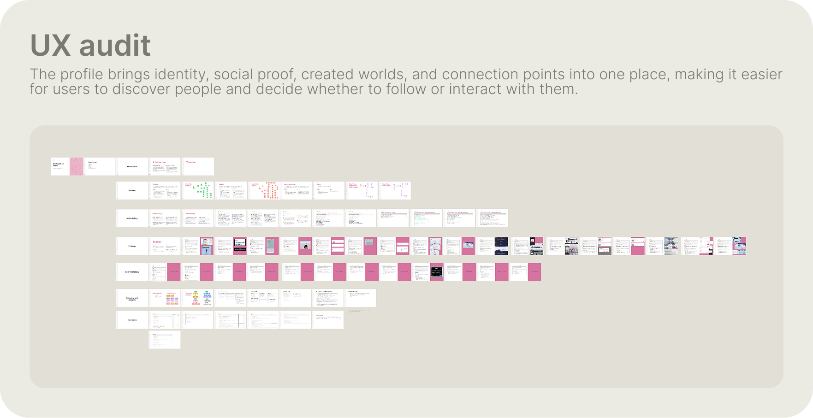
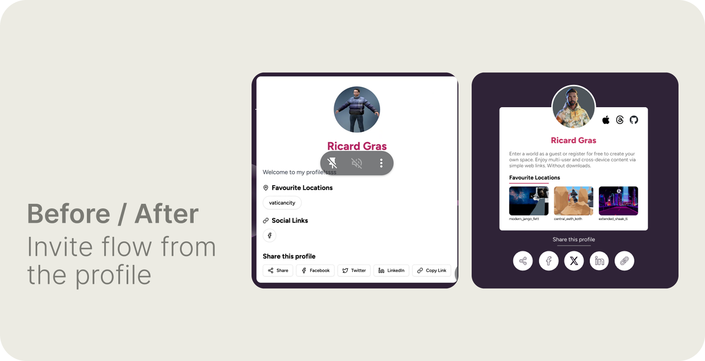
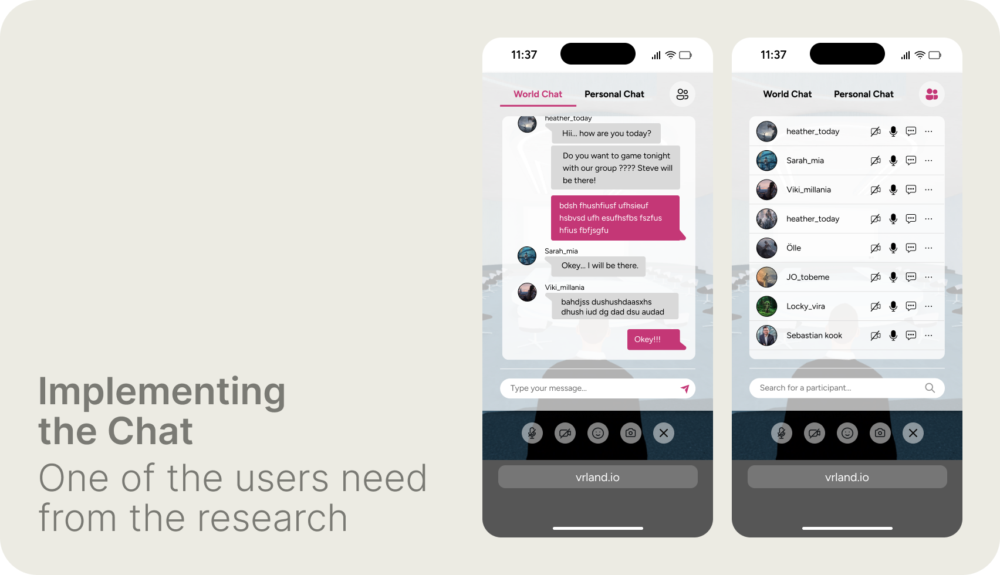
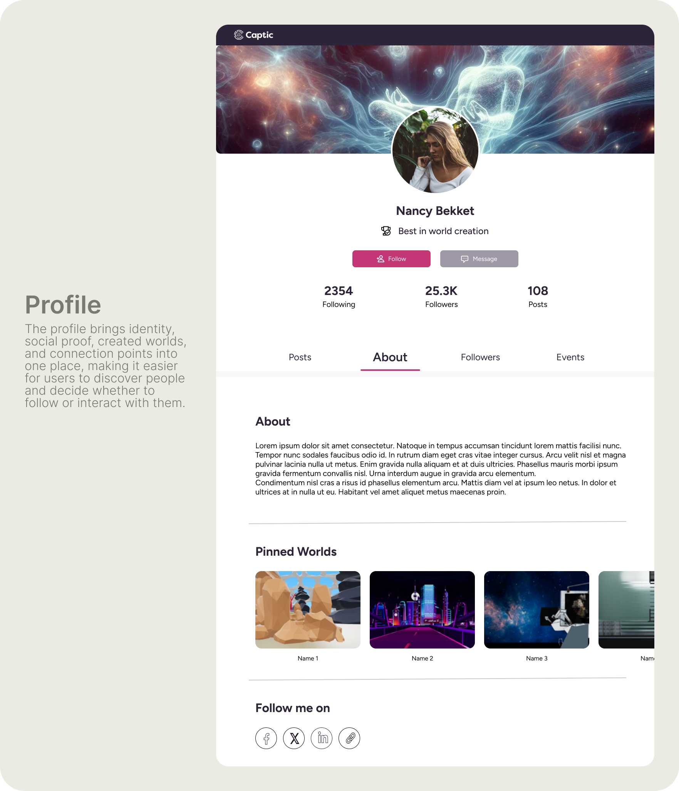

Role and overall result
Product Design Consultant. Full-platform UX audit followed by a research-led redesign of onboarding, in-world controls, social interaction, and sharing.
12+
user-flow dead ends identified
32
prioritized growth opportunities
Q1 2025
reports adopted as product roadmap
UX audit results — Captic / w3dge
Tools and methodologies
Figma — all screen design and prototyping. Research via thematic analysis across four domains: customization and creative expression, social interaction patterns, accessibility and usability in 3D environments, and motivation and engagement. Findings synthesized into design implications before any screen work began.
| Research theme | Main insight | Design implication |
|---|---|---|
| Customization & creativity | Users value freedom in shaping their environment and identity — avatar, world ownership, creative control matter | Make identity and creation approachable rather than technical |
| Social interaction | Social presence and shared experiences are major engagement drivers — community, communication, sharing creations | Make communication and social actions easy to discover without letting UI dominate the 3D environment |
| Accessibility & usability | 3D interaction introduces a learning cost — controls, navigation, and object placement are unfamiliar interaction models | Use progressive onboarding and contextual guidance rather than exposing every control at once |
| Motivation & engagement | Users need reasons to return beyond simply entering a 3D space — events, goals, discovery, emotional connection | Strengthen social triggers, sharing, identity, and recurring interaction |
Research synthesis — four themes that drove product design priorities
- Identity and creative expression mattered from the start — onboarding redesigned as a lightweight identity step before world entry, not a technical setup
- A dense keyboard/mouse instruction panel covered the world on entry — replaced with progressive contextual hints that teach in context, not as a manual
- Social presence drives engagement — World Chat, Personal Chat, and participant management brought directly into the immersive experience
- Sharing was buried inside the profile — separated into a dedicated invite flow making the primary action immediately clear
- Users need social proof and connection points — profile consolidated identity, followers, pinned worlds, and Follow/Message actions in one place

Full-platform UX audit — a screen-by-screen map of the existing product laid out by theme: flows, findings, and opportunities. This audit surfaced 12+ user-flow dead ends and 32 prioritized growth opportunities.

Invite & share — before (left) and after (right). Originally, sharing was buried at the bottom of a cluttered profile mixed with unrelated content. The redesign turns it into a focused invite card — a short intro, favourite-location previews, and a clear row of share options.
What changed and why
Onboarding reframed as a lightweight identity step — name and avatar — before entering, not a controls tutorial. In-world guidance replaced the full instruction panel with progressive contextual hints. Social communication brought into a persistent but unobtrusive layer: World Chat, Personal Chat, participant list with mic/video states. Sharing extracted from the profile into a focused invitation surface. Profile rebuilt around social identity: followers, posts, events, pinned worlds, Follow and Message actions.
Design responses

Chat & participants. Left: World Chat, a live message thread with a message input and controls for mic, camera, emoji, and screenshot. Right: the participant list, showing everyone in the space with individual mic and video states plus participant search.

Onboarding — a lightweight identity step before world entry. A three-step flow (identity → space → world) lets users set a display name and pick an avatar style, then enter immediately. Identity comes first; controls are taught later, in context.

Profile — social identity in one place: avatar, tagline, follower and post stats, clear Follow and Message actions, tabs for Posts / About / Followers / Events, and a Pinned Worlds carousel showcasing the user's created spaces.
← Portfolio